README.md
Perception to action, end to end.
## problem statement
Industrial bin picking is difficult because objects are often randomly oriented, partially occluded, and densely packed, which makes traditional rule-based perception and fixed grasp strategies unreliable.
The goal was to build an autonomous manipulation pipeline that understands cluttered bin scenes, estimates object geometry and pose, generates feasible grasps, and executes picks with minimal task-specific training.
## implementation notes
- Used Foundation Stereo to reconstruct dense depth and scene geometry from stereo RGB images.
- Applied CNOS for object-level instance segmentation in cluttered scenes.
- Used FoundationPose to estimate the 6-DoF pose of detected objects.
- Integrated GraspNet to generate candidate 6-DoF grasp poses from the reconstructed scene.
- Transformed perception and grasp outputs into the robot coordinate frame for execution.
- Filtered grasp candidates on reachability, approach direction, and collision feasibility.
- Integrated the complete perception-to-action pipeline with a Franka manipulator.
- Validated the system in simulation using NVIDIA Isaac Sim.
01 / Stereo depth estimation
Foundation Stereo, fine-tuned for better sim-to-model alignment.
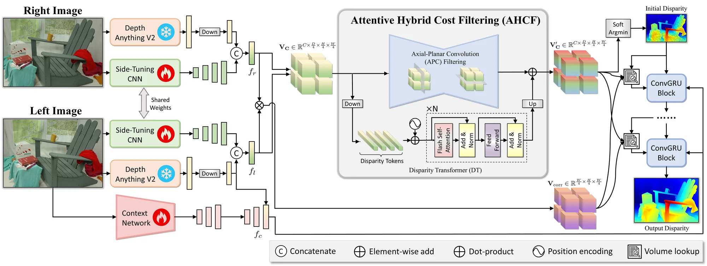
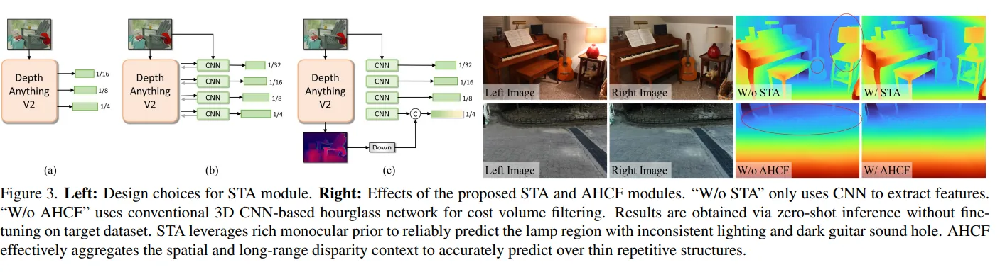
## fine-tuning
Fine-tuned SOTA models for better sim-model alignment.
- Fine-tuned side-tuning adapter weights
- Optimized feature-fusion layers
- Refined disparity prediction layers
- Adapted normalization statistics and parameters
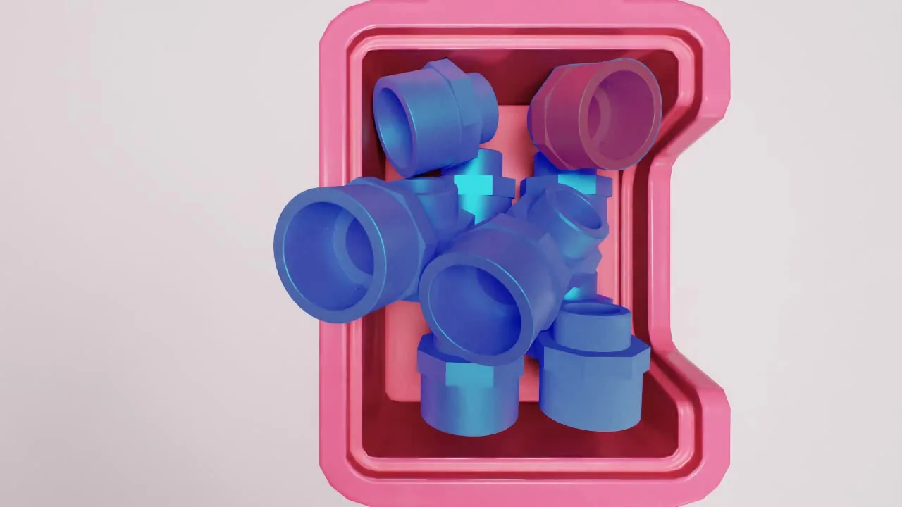
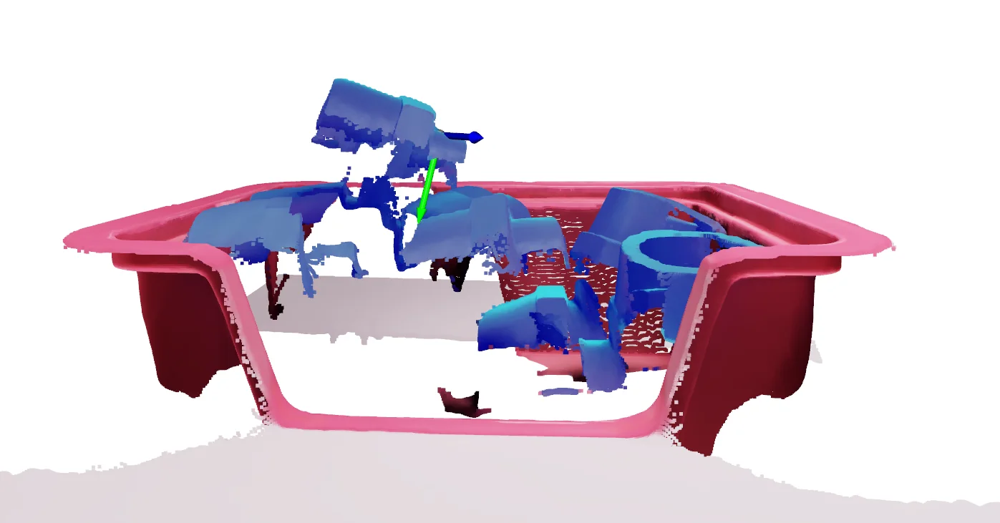
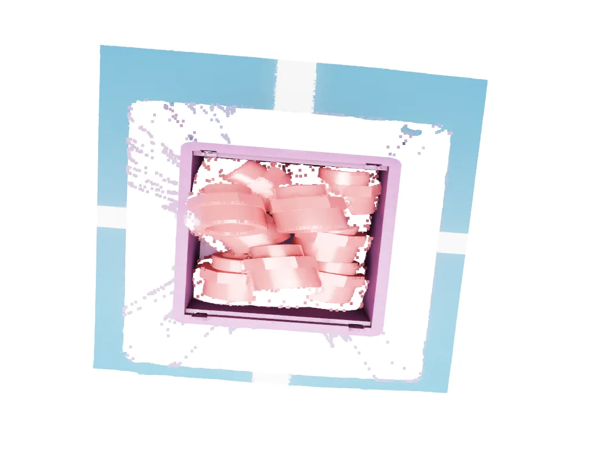
02 / Zero-shot segmentation
CNOS matches what the camera sees against renders of the CAD model, with no task-specific training.
- Onboarding (preparation). Start with 3D CAD models of the objects (here, a coupler). Render each model from many viewpoints with pyrender or BlenderProc. Every render is turned into a descriptor, a numerical fingerprint, with a pretrained feature extractor like DINOv2. These fingerprints form the reference database: a library of how the object looks from every side.
- Proposal (looking at the real scene). Take an RGB photo of the scene. A proposal extractor such as SAM or FastSAM finds regions that might be objects. Each region is cropped and passed through DINOv2 again to produce proposal descriptors, fingerprints of the candidate objects.
- Matching (comparison and decision). Compare each proposal descriptor with each reference descriptor using cosine similarity, which gives a score per template. Scores are aggregated per object across all views of the same CAD model, and the system picks the best-matching object ID with a confidence score.
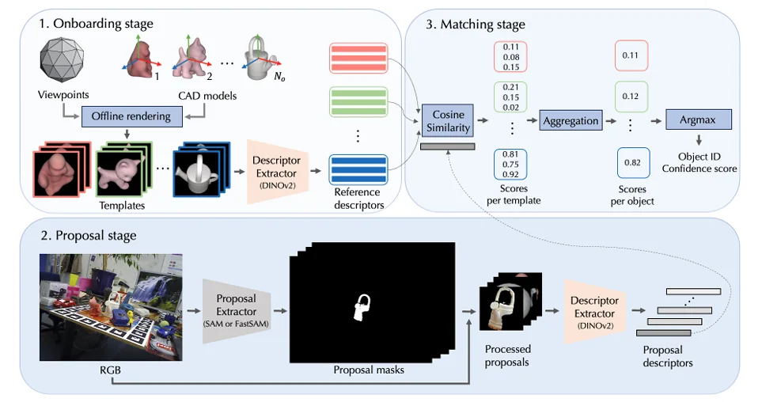
## why synthetic data?
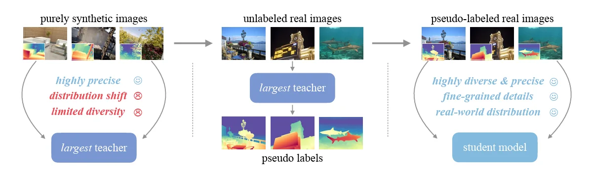
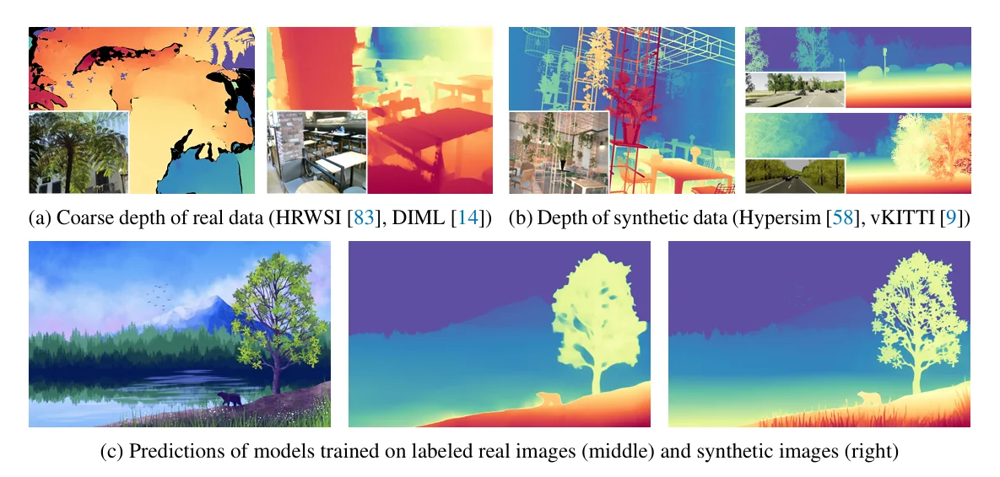
- Expands training diversity with varied shapes, lighting, and object configurations.
- Reduces dependence on expensive real-world data collection and manual annotation.
- Enables controlled generation of rare, difficult, and edge-case scenarios.
- Improves zero-shot generalization to unseen objects and real-world environments.
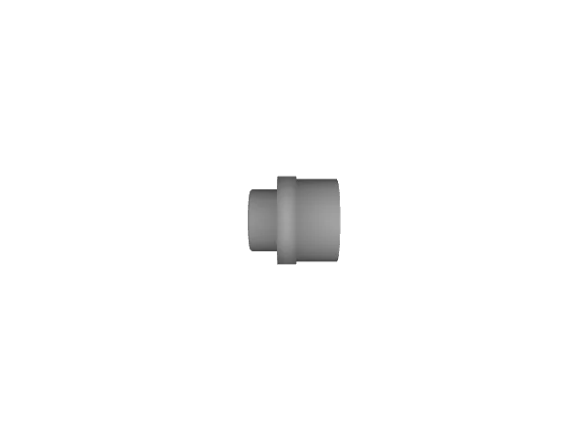
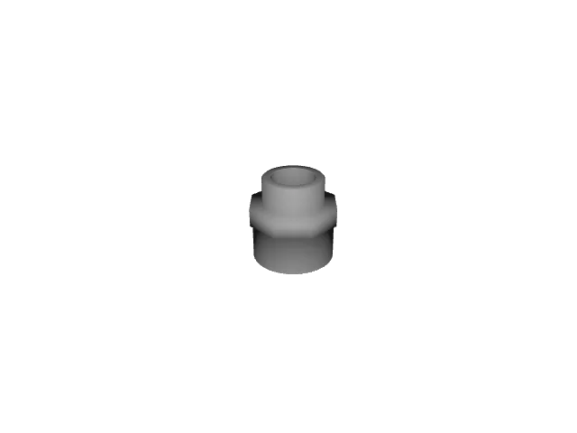
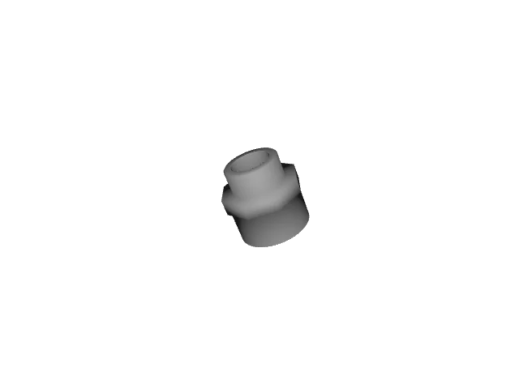
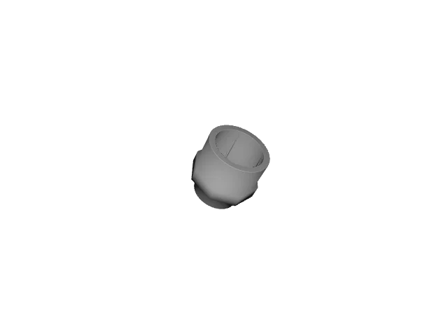
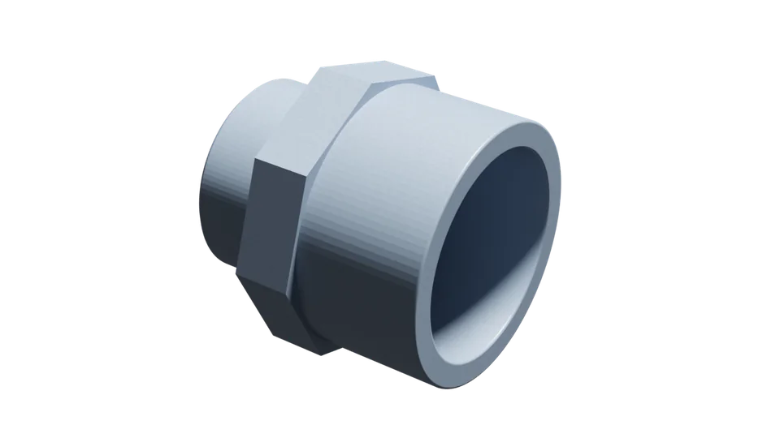
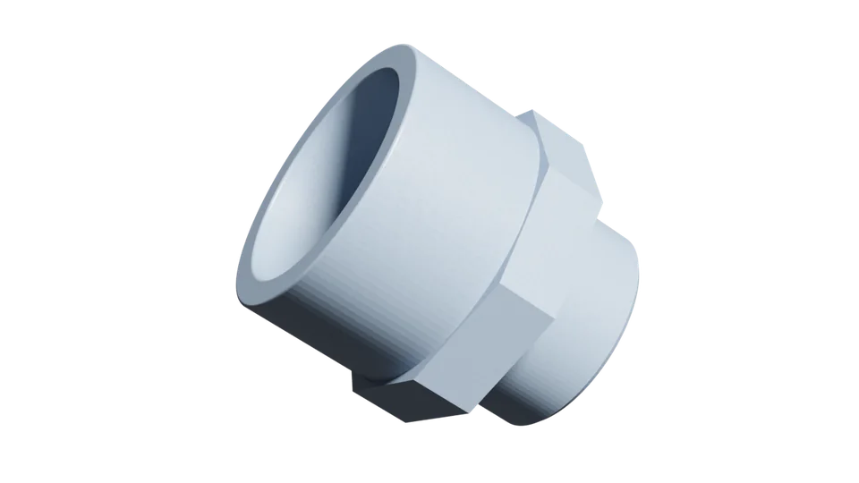
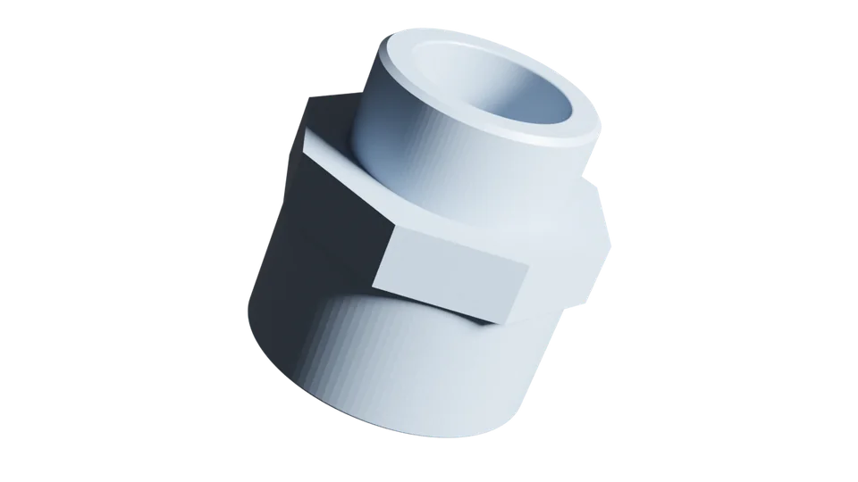
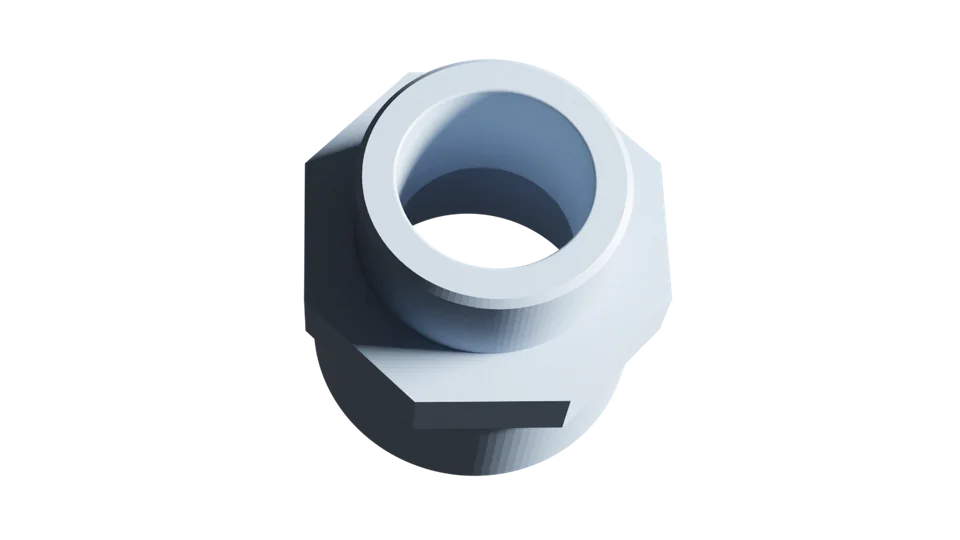
03 / 6D pose estimation
FoundationPose estimates where the selected object is and how it is oriented in 3D.
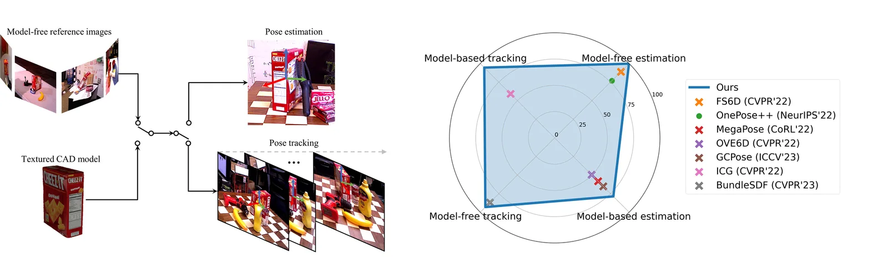
- Segmentation first. From the RGB frame, generate an instance segmentation mask for each visible adapter.
- Top-object selection. Analyze the masks to find which adapter is physically on top, the most accessible for pickup.
- Mask-guided pose estimation. Pass the selected mask with the RGB/depth frame to the 6D pose estimation model.
- 6-DoF output. The model returns the adapter pose as 3D position plus 3D orientation, ready for grasping.
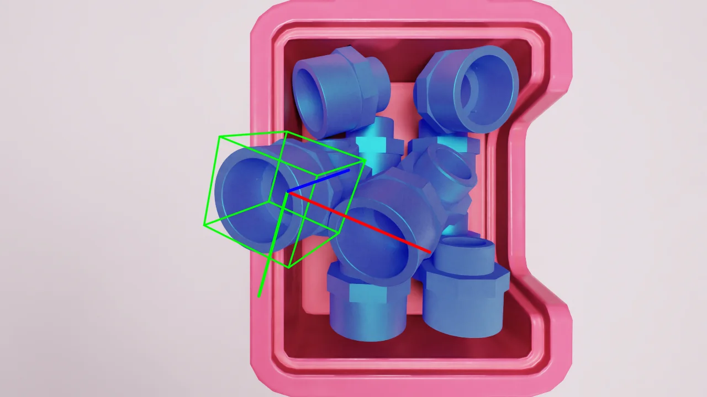
04 / Grasp estimation & control
GraspNet proposes grasps; filtering and RMPflow turn them into safe motion.
Grasps come from GraspNet-1Billion, a large-scale benchmark for general object grasping that also covers related areas like 6D pose estimation and unseen-object segmentation.
On top of it, I implemented a multi-stage custom filtering process to pick the best achievable grasp position and orientation for the arm.
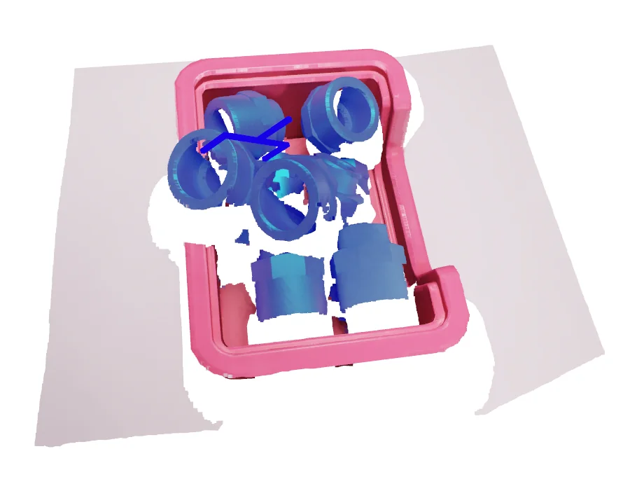
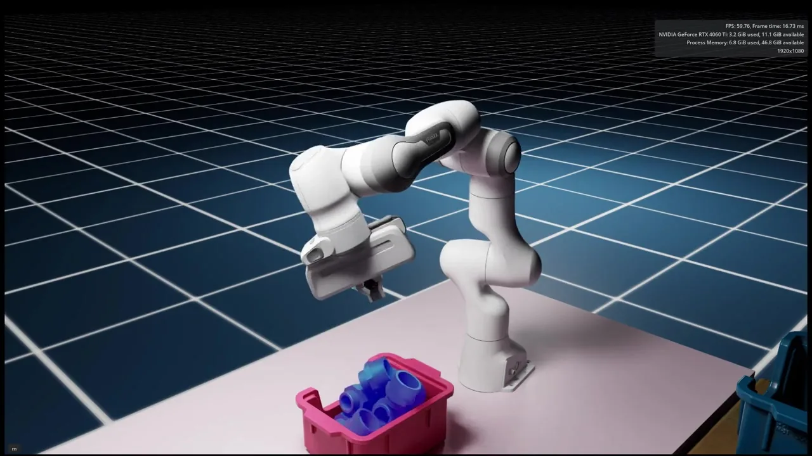
RMPflow generates IK and motion planning for the target position and orientation given by GraspNet.
A safe pre-approach and post-grasp pose is computed from the target pose for safe retrieval of objects.